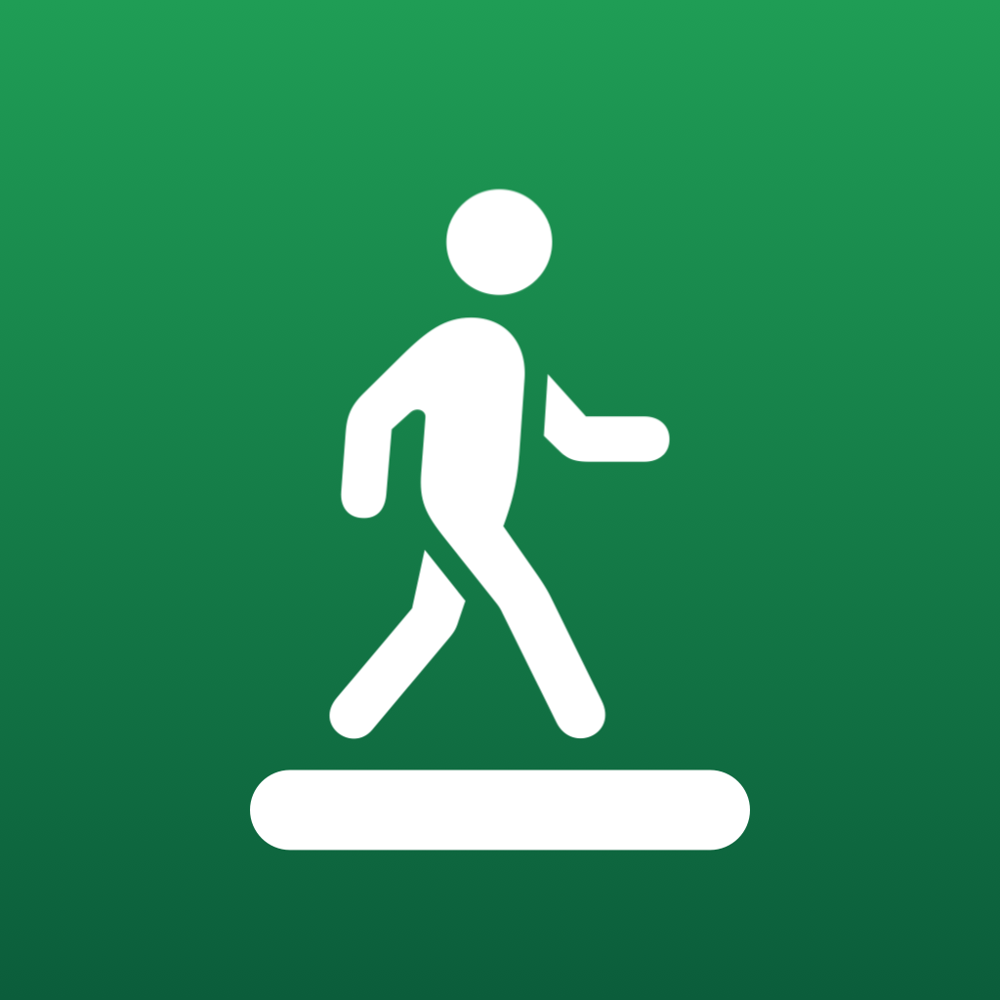

StepDesk
Control your walking pad from your iPhone or Apple Watch, and save every walk to Apple Health.
$1.99 on the App Store
What it does
- Start, stop and change speed from your phone or Apple Watch.
- See live heart rate and your time, distance and calories. Heart rate comes from your Watch or AirPods.
- Every walk with your pad is saved to Apple Health as one workout, with the pad's distance.
- No ads, no account, and nothing leaves your device.
Works with PitPat walking pads that show up in Bluetooth as PitPat-T (tested on the DeerRun BA16-B). Some pads that use the PitPat app use a different Bluetooth protocol and are not supported yet, and neither are pads that use other apps. Please check the support page before buying.
Keep your pad's own remote or stop button within reach. StepDesk stops the belt over Bluetooth, which can drop.
Try it without a pad
Demo mode walks with a simulated pad, so you can see how StepDesk works before you connect hardware. Demo walks are not saved to Apple Health.